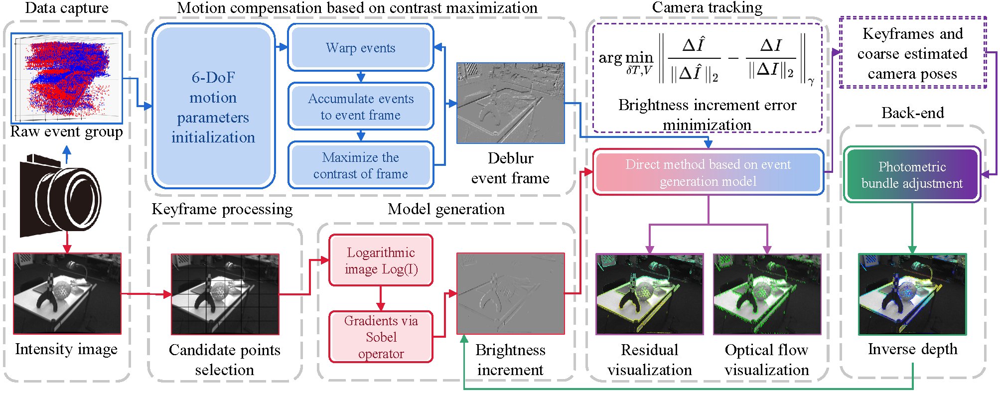
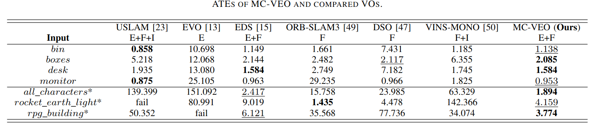
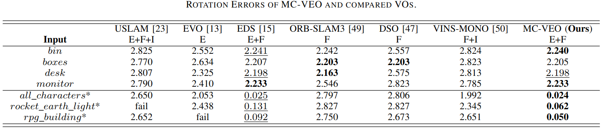

|
MC-VEO: A Visual-Event Odometry with Accurate 6-DoF Motion Compensation
Jiafeng Huang1,
Lin Zhang1,
Tianjun Zhang1,
and Shengjie Zhao1
1School of Software Engineering, Tongji University, Shanghai, China
|
Introduction
This is the website for our paper MC-VEO: A Visual-Event Odometry with Accurate 6-DoF Motion Compensation.
In recent years, although visual odometries have achieved great success, their application scenarios are limited due to the frame rate limitations of standard cameras.
The event camera is a recently proposed bionic sensor that is completely different from frame-based cameras.
Its unique working mechanism and extremely high acquisition frequency allow it to function steadily in challenging scenes where traditional visual sensors cannot cope with, which offers new possibilities for visual odometry solutions to overcome extreme environments.
However, the application of the event camera in visual odometry still faces certain challenges, including the RGB-event modality gap and the requirement for the efficient processing of large amounts of event data.
To address these research gaps to some extent, we propose a novel visual-event odometry, namely MC-VEO (Motion Compensated Visual-Event Odometry), which follows an Event Generation Model (EGM) based direct sparse framework.
Specifically, by introducing the temporal Gaussian weight into the standard contrast maximization framework, we propose the first effective 6-DoF motion compensation method that does not rely on additional sensors and only uses events to generate deblurring event frames.
The generated frames can then be accurately aligned with the corresponding RGB images through EGM in MC-VEO, so as to overcome the modal gap between events and RGB images.
Additionally, we decouple the optimization process of EGM based motion estimation objective function into two stages, and reduce the overall computational cost by pre-calculating the ''independent variables''. During the optimization, our matrix representation and parallel solving further accelerate the per-point processing of events, which enables MC-VEO to show satisfactory speed performance even facing large amounts of event data and candidate points.
Overall Framwork
The overall framework of MC-VEO is shown in the following figure. The events obtained from the event camera are divided into groups, and after motion compensation, clear event frames are formed.
The images obtained from the color camera go through keyframe judgment and candidate point selection to predict and form the brightness increments.
The event generative model is used to correlate measurements from events and images.
The front-end predicts camera motion by minimizing the brightness increment error of both two kinds of measurements.
The camera pose and velocities as well as the depth of sparse candidate points are refined in the photometric bundle adjustment at the back-end to sustain the VO system's good performance.  Performances


Considering all metrics comprehensively, the performence of the MC-VEO is the best among all compared schemes.
Source Codes
Demo Videos
The following is the demo video demonstrating the performance of our MC-VEO in some typical sequences.